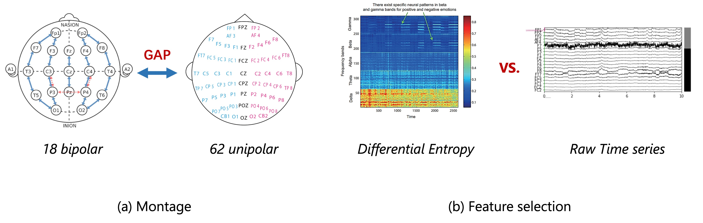
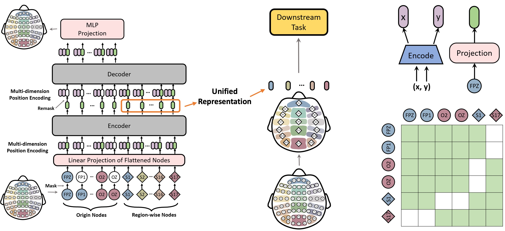
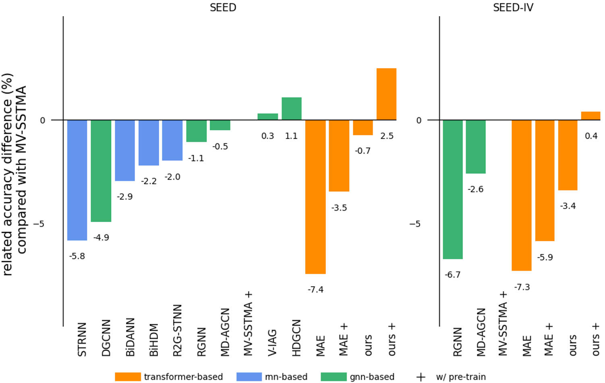
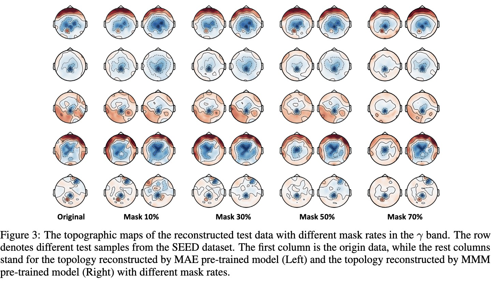

Learning Topology-Agnostic EEG Representations with Geometry-Aware Modeling
Paper: PDF
Authors
- Ke Yi (South China University of Technology) kerry.yi@outlook.com
- Yansen Wang (Microsoft Research Asia) yansenwang@microsoft.com
- Kan Ren (Microsoft Research Asia) renkan@shanghaitech.edu.cn
- Dongsheng Li (Microsoft Research Asia) dongsli@microsoft.com
Abstract
Large-scale pre-training has shown great potential to enhance models on downstream tasks in vision and language. Developing similar techniques for scalp electroencephalogram (EEG) is suitable since unlabelled data is plentiful. Meanwhile, various sampling channel selections and inherent structural and spatial information bring challenges and avenues to improve existing pre-training strategies further.
To break boundaries between different EEG resources and facilitate cross-dataset EEG pre-training, we propose to map all kinds of channel selections to a unified topology. We further introduce MMM, a pre-training framework with Multi-dimensional position encoding, Multi-level channel hierarchy, and Multi-stage pre-training strategy built on the unified topology to obtain topology-agnostic representations.
Experiments demonstrate that our approach yields impressive improvements over previous state-of-the-art techniques on emotional recognition benchmark datasets.
Algorithm Overview
We introduce MMM, an EEG pre-training framework based on the unified topology that follows the Masked Auto-Encoder (MAE) training schema, i.e., during pre-training, the model first encodes partially-masked irregular input tokens (DE features) to a unified representation with an encoder, and then aims to reconstruct the masked tokens from the unified representation with a decoder.
Our designs of MMM to better support EEG pre-training are 3-fold: 1) Multi-dimensional positional encoding, which injects the geometric information into tokens; 2) Multi-level channel hierarchy, where extra tokens representing aggregated regions are added to the original set of channels. Tokens and channels interact with each other hierarchically; 3) Multi-stage pre-training, where two different masking strategies, global random masking and regional masking are used in turns to learn the hierarchical representations effectively.
Pre-training stages guide models to generate information-rich unified representation with a bottleneck architecture, where reconstruction only relies on that representation. The pre-trained models can be applied in numerous downstream tasks with different montages, only requiring input in the shape of [num. of ch., num. of feat.].
Experiment Results
We demonstrate the effectiveness of MMM on two benchmark datasets, SEED and SEED-IV, with results shown in the following two tables, respectively.
Visualization
We perform reconstruction visualization to analyze the effects of our proposed objectives, and to provide more insights as shown in the following figure.
As the mask ratio increases, MAE's performance collapses while MMM maintains superior reconstruction quality. This phenomenon further substantiates that our approach can effectively model EEG data by the unified topology, yielding robust representations with rich information.
Related Works
A Multi-view Spectral-Spatial-Temporal Masked Autoencoder for Decoding Emotions with Self-supervised Learning
Masked Autoencoders Are Scalable Vision Learners